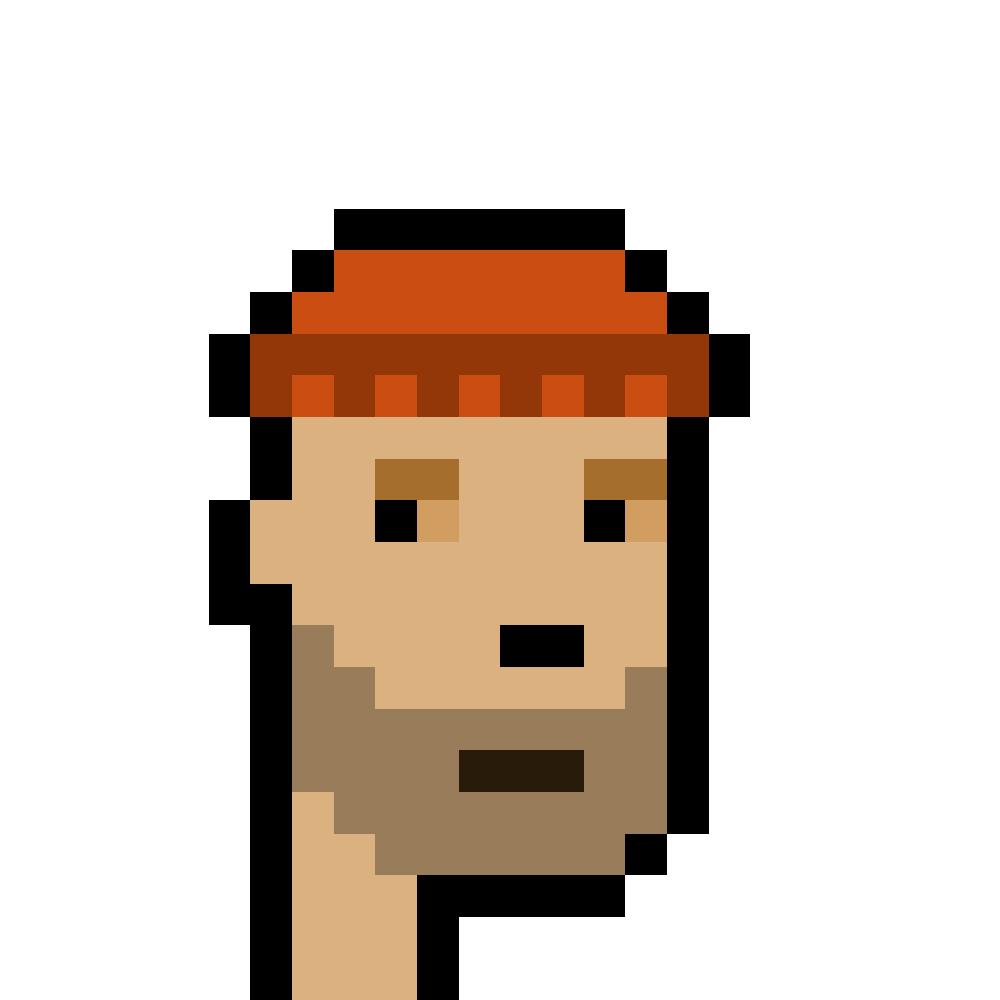
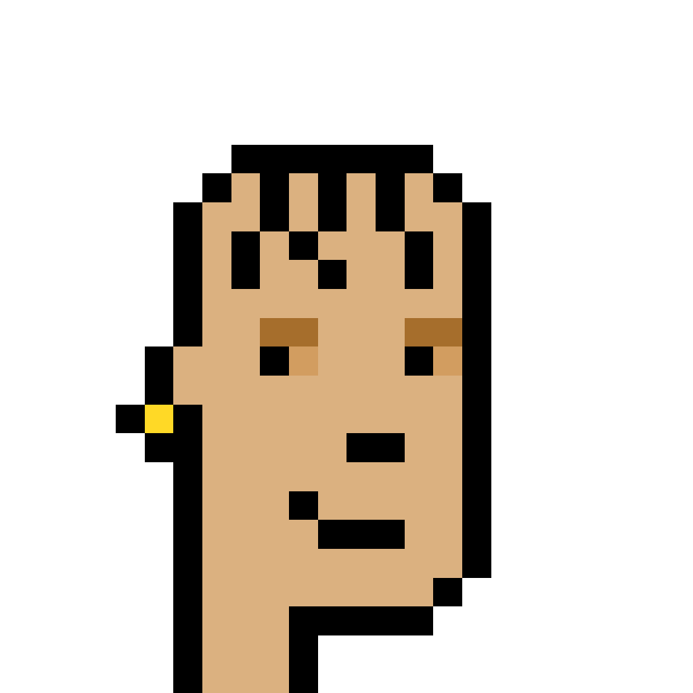

About Us
Just two guys obsessed with CryptoPunks and NFTs.
In 2020 we started down the Ethereum rabbit hole and haven't turned back since. By 2021 we were fully addicted to NFT culture and we've never once regretted it. A CryptoPunk is the holy grail of NFTs, a beautiful piece of blockchain history, a genuine work of art, and a symbol of everything we love about this space.
We rock our Punk avatars everywhere. That's #3355 and #6058 on our Twitters. If you've been around the community long enough, you've probably seen us.
We've traded multiple Punks, helped projects come to life, collected other major pieces in the space, and put serious money into understanding this market from every angle. We know what makes a Punk valuable. We know which traits the community desires, which ones are slept on, and which ones aren't worth the premium. We have real relationships in this community, which means we can open doors to off-market Punks you wouldn't even know you could get your hands on.
Here's why we built Punksierge: buying a CryptoPunk is a big decision. It's expensive, it can feel overwhelming, and it's hard to know where to start. We want to help you feel confident and get the Punk that's right for you. We've made mistakes in this market and learned from them so you don't have to.
Honestly? We love this stuff so much we'd pay you just to have the conversation. There's no fee, no catch. We do this because we genuinely love talking about Punks, NFTs, and crypto, and helping people find their way into a world that changed ours.
Whether you're ready to buy today, just starting to explore, or simply curious about NFTs, don't be shy. Reach out. We'll make the time. No pressure, no sales pitch. Just two people who love this world and want to help you get it right.

